Built for a crowded desk: it clips on, moves to any height, and brings its own light.
Research
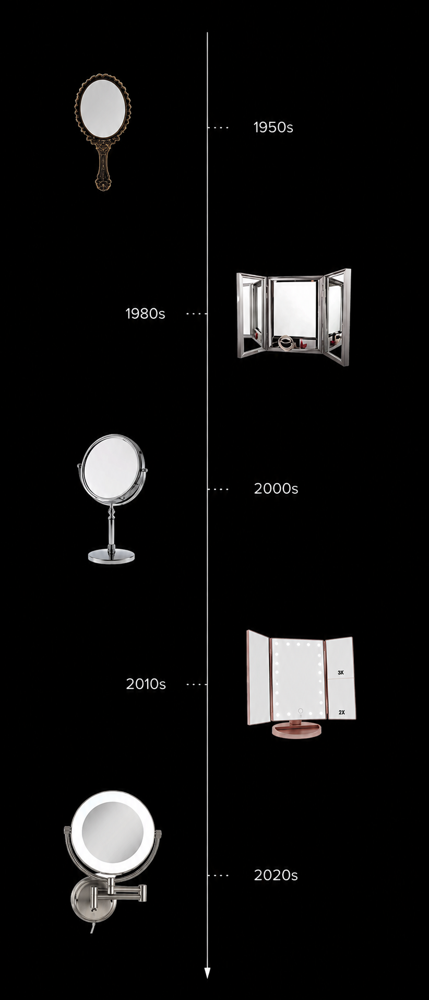
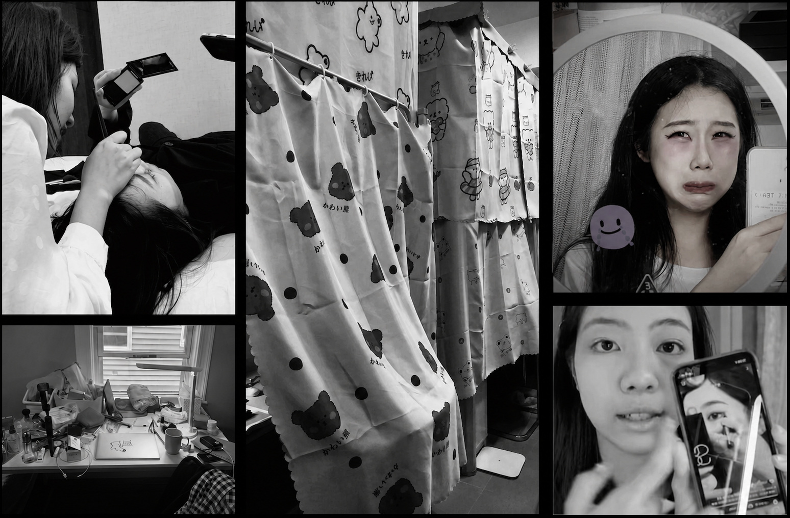
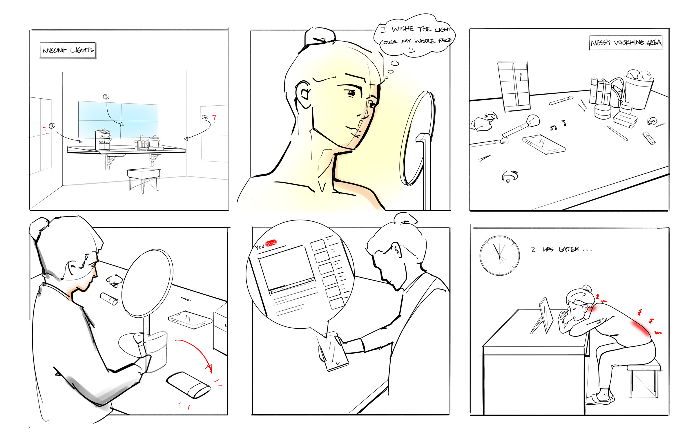
Problem Statement
- You can’t see your own face properly.
- There’s no room left on the desk.
- You end up hunched over for twenty minutes.
- You want to follow a video at the same time.
Exploration
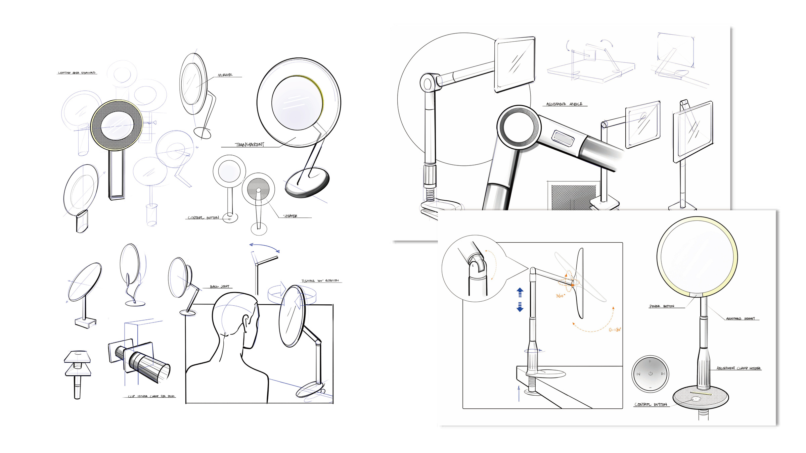
Final Design
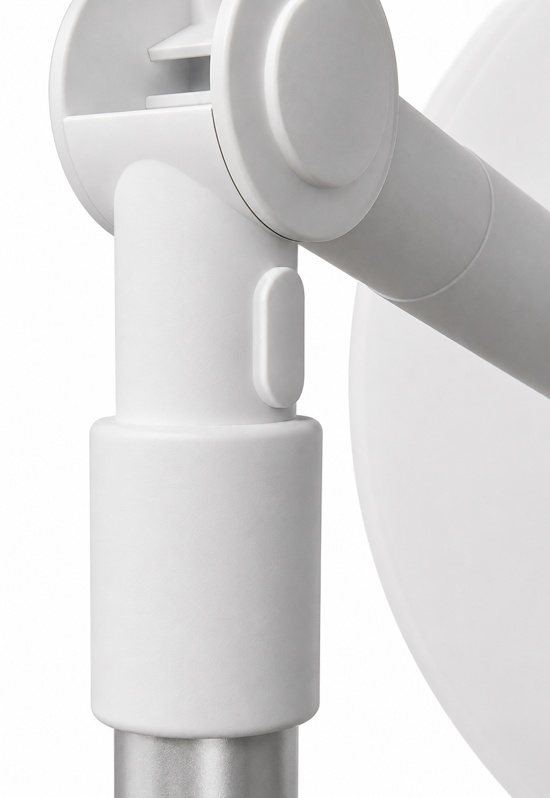
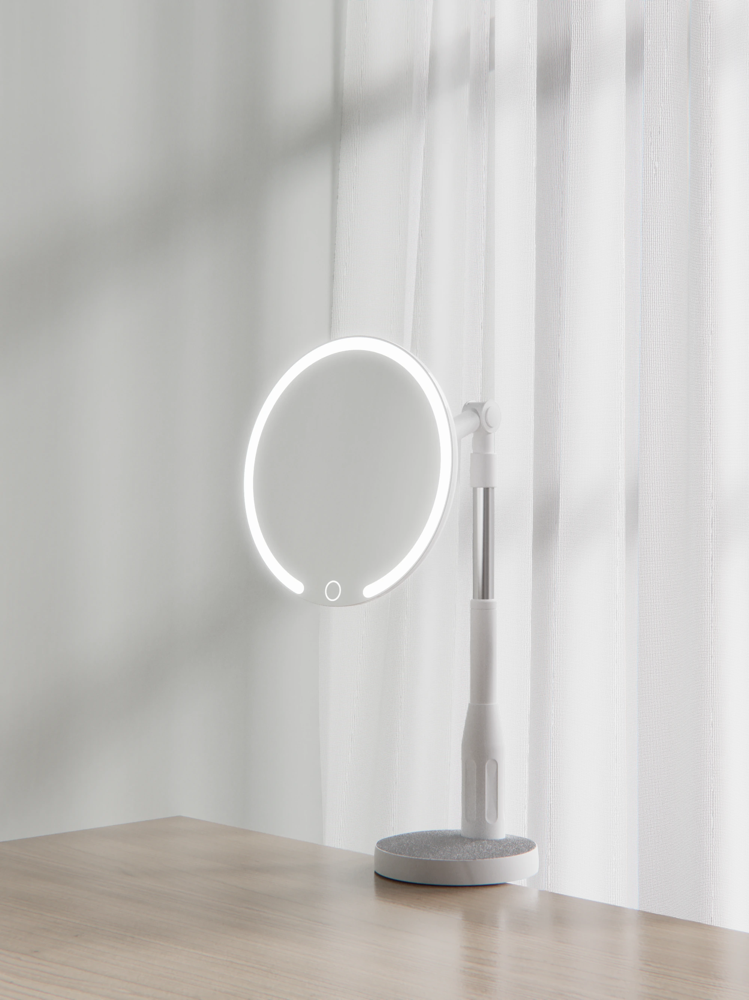
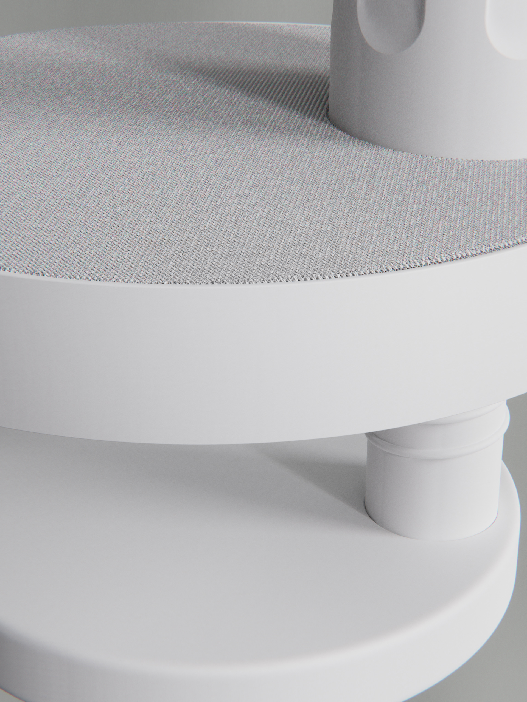
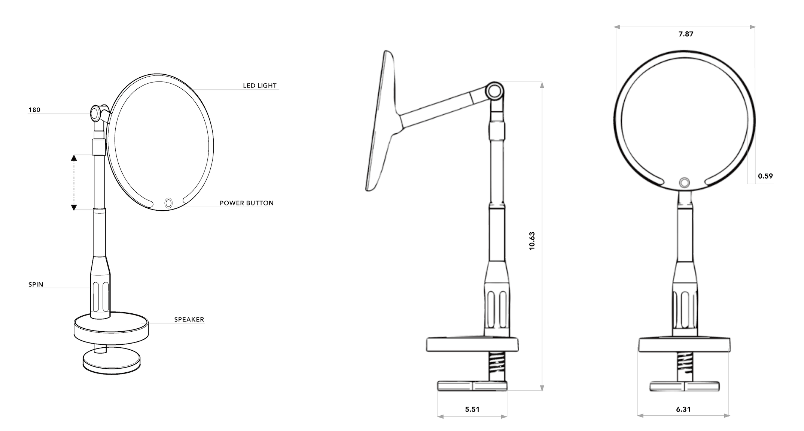
How It Works
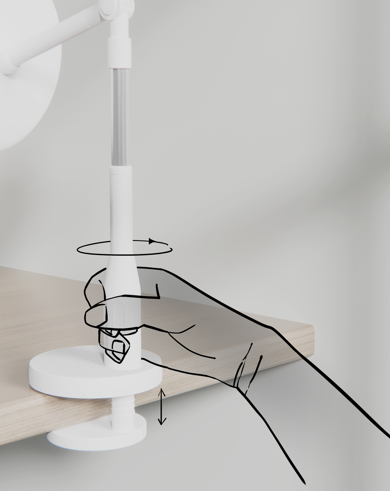
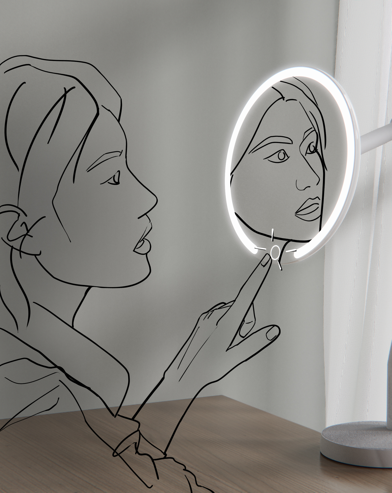
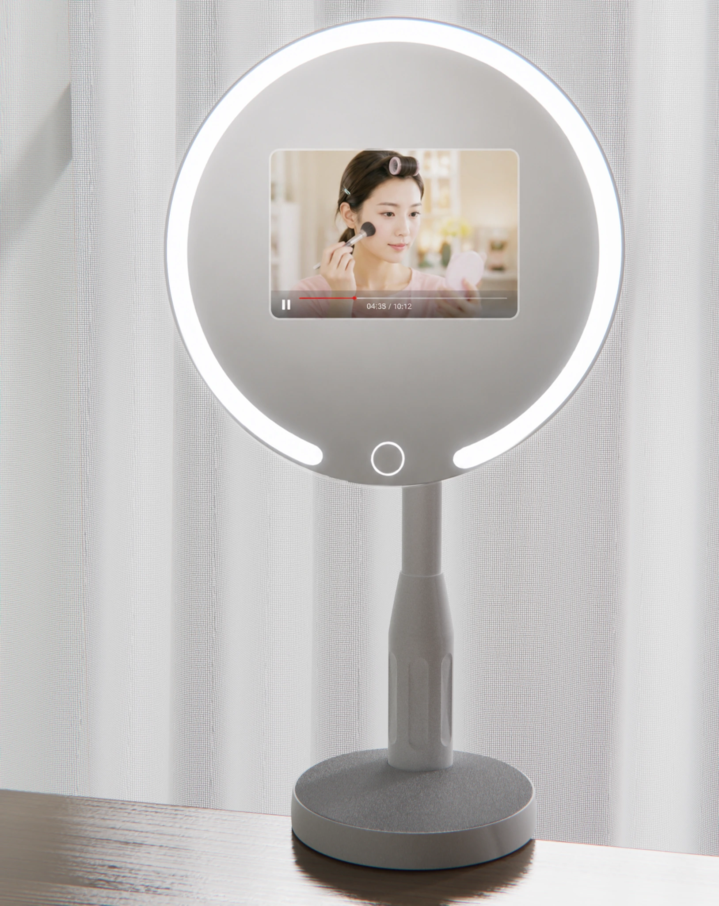
Brand Identity
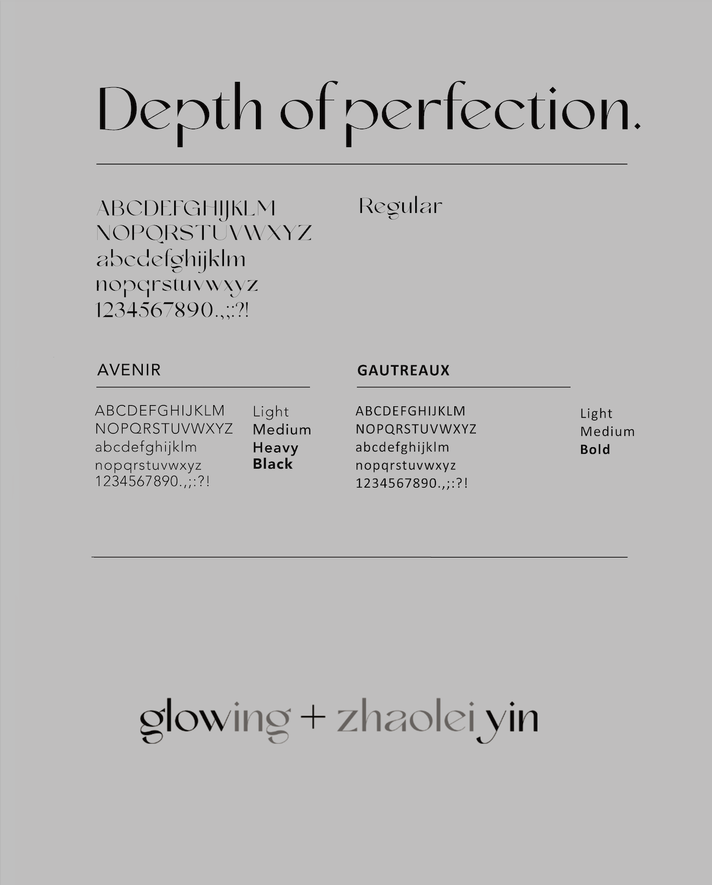
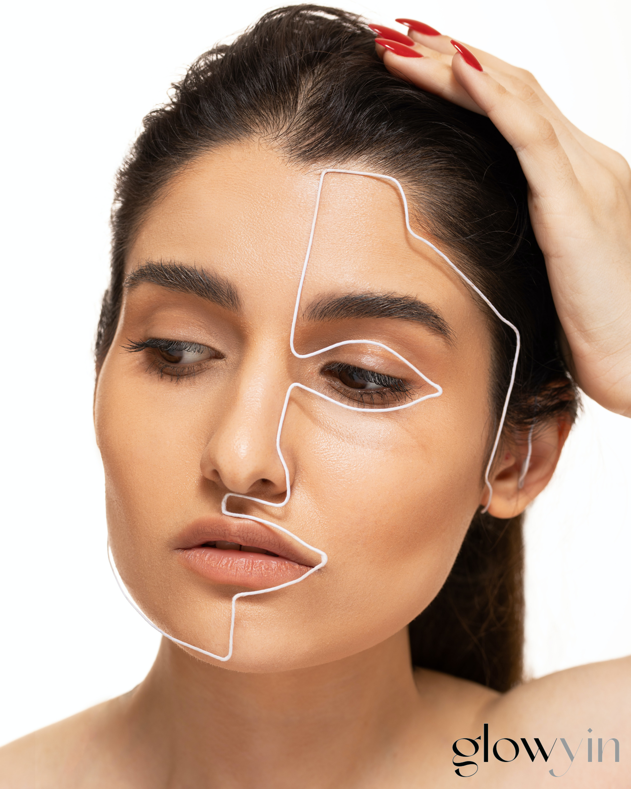
Packaging

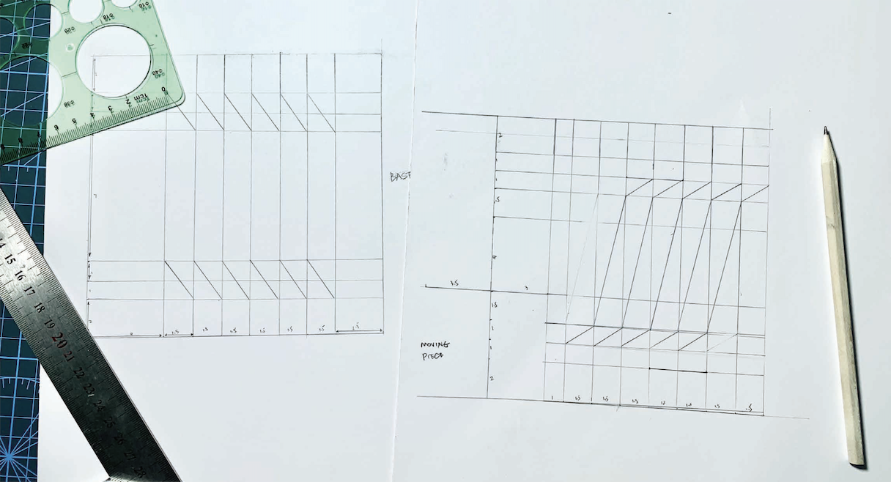
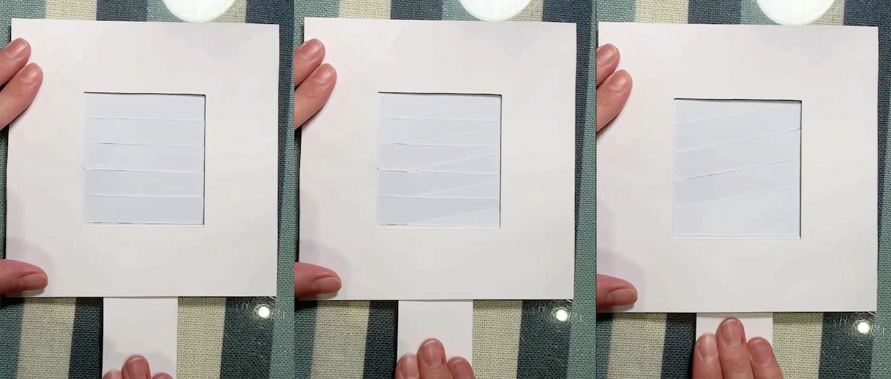
Pull-Tab Mechanism